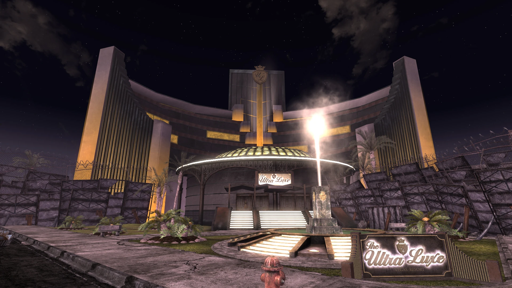
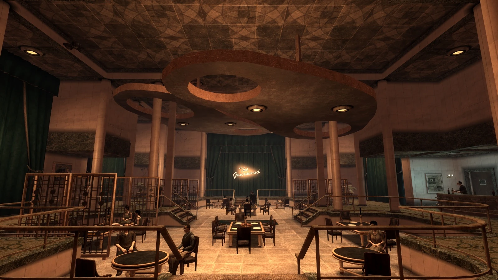

ウルトラ・ルックス (Ultra-Luxe)
Ultra-Luxe Las Vegas Resort
LOCATION DATA

レストラン「ザ・ゴルマンド」
公衆浴場
ペントハウス
Fallout TVシリーズ (S2)
— Mr.ニューベガス (Radio New Vegas)
ウルトラ・ルックス・ラスベガス・リゾート（Ultra-Luxe Las Vegas Resort）、通称「ウルトラ・ルックス」は、ニューベガス・ストリップ地区の中央セクションに位置するカジノリゾートです。
その外観は、核戦争後の埃と汚れにまみれた世界において「洗練と退廃のオアシス」という印象を与え、レストラン「ザ・ゴルマンド」の料理は一般的なウェイストランダーの味覚をはるかに凌駕しています。しかし、閉ざされた扉の奥では、運営を行う「ホワイトグローブ協会（White Glove Society）」がかつての部族時代の「暗い過去（食人の風習）」から脱却しようともがいており、契約によって彼らはその過去を秘匿し続けることを義務付けられています。
背景
大戦前
トップス・カジノとほぼ同時期に建設されたウルトラ・ルックスは、ストリップにおいて最も豪華な施設の一つであり、最高品質の宿泊設備と世界クラスのレストラン「ザ・ゴルマンド」を特徴とし、最高品質のサービスを提供することを売りにしていました。
大戦前の2072年7月13日、カジノ内でマフィア同士の銃撃戦が発生しました。目撃者の証言は食い違っていますが、非常に混乱した状況であり、5人のマフィア全員が死亡し、17人の傍観者が負傷したことでは一致しています。当時のラスベガス警察署長は、この事件を警察の「大勝利」として発表していました。
大戦後
大戦後も、ウルトラ・ルックスは「強固な洗練」の施設として存続しており、運営者であるホワイトグローブ協会の「より問題のある過去の傾向」を繊細に隠し続けています。
スタッフは顧客を甘やかし、ストリップで最もエリートなカジノ体験を提供しています。メンバー間ではドレスコードが厳格に守られており、ホワイトグローブ協会のメンバーは全員がきちんとした服装をし、丁寧な言葉を使い、礼儀正しく振る舞うこと（そしてマスクで素顔を隠すこと）が義務付けられています。
カジノの主な魅力は、肉料理中心のレストラン「ザ・ゴルマンド」、カクテルラウンジの「トップ・シェルフ」、そして「アートギャラリー」です。なおカジノのフロアにはスロットマシンは一切なく、ギャンブルとして提供されているのは「ルーレット」と「ブラックジャック」だけです。
Mr.ハウス自身もウルトラ・ルックスを高く評価しており、「彼ら（ホワイトグローブ）は素晴らしいリゾートホテルを作り上げました。私が歩き回れる身体だったなら、毎晩ゴルマンドで食事をしたいくらいですよ」と語っています。
ハウスは彼らがかつて人肉食を行っていた事実を完全に把握していましたが、ニューベガス再建の際に協力を求めた際、契約の主な条件として「その『食事療法』を控えること」を明確に義務付けたのです。
レイアウト
ストリップ中央セクションの南東角に位置し、建物の内部は7つの主要な部分に分かれています。
ロビーとカジノ (Lobby and Casino)
入り口となるロビーとカジノエリア。非常にファッショナブルなバーである「トップ・シェルフ」もこのエリアに位置しています。飲み物は意図的に非常に高価に設定されています。受付デスクには、ホワイトグローブ協会の重要人物であるモーティマー（Mortimer）が立っています。
フロアの至る所から、戦前のクラシック音楽（バッハ、ヴィヴァルディの四季、モーツァルトなど）が優雅に流れています。

ザ・ゴルマンド (The Gourmand)
気難しいシェフでありホワイトグローブ協会のメンバーでもあるフィリップが運営する有名な高級レストラン。名物である「バラモンのウェリントン（Brahmin Wellington）」で知られており、長いキャンセル待ちのリストが存在します。しかし、実際のレストランの内部は常に閑散としています。ストリップの旅行者の中には、「ホワイトグローブ協会はレストランをいっぱいにすることよりも、独占的で排他的な雰囲気を維持することに関心があり、見栄のために待機リストを水増しして客を恣意的に拒否している」と推測する者もおり、この噂はMr.ニューベガスのラジオでも言及されています。
キッチン (Kitchens)
ゴルマンドからアクセスできる地下キッチン。多数の部屋で構成されており、メインキッチン、パントリー、テッド・グンダーソンが閉じ込められていた鍵のかかった冷凍庫、ワインルームなどがあります。地下廊下は3人のホワイトグローブ協会メンバーによって定期的にパトロールされており、うち2人は火炎放射器を使って豪快にバラモン肉を『ロースト』しています。名誉会員資格や変装なしで侵入すると彼らは敵対します（SpeechかRepairスキルで誤魔化すことが可能）。
会員限定エリア (Members only area)
巨大なダイニングルーム、隣接する準備室、受付エリア、クローゼットで構成されるエリア。ここでは10人以上のホワイトグローブ協会のメンバーが「ドレスケイン（仕込み杖）」で武装して警備（バウンサー）をしています。マージョリーから名誉会員として認められていない状態で立ち入ると即座に敵対します。
公衆浴場 (Bathhouse)
かつての屋内プールが公衆浴場（バスハウス）に改装されています。クエスト『Beyond the Beef』で調査員の連絡係と会うことになるスチームルームがあります。風呂にはわざわざカリフォルニア（NCR領域）から輸入した海塩が使われているという贅沢な仕様です。
ボン・ヴィヴァン・スイート (Bon Vivant suite)
カジノで約11,250キャップ（チップ）を獲得したプレイヤーに報酬として与えられる、非常に豪華なホテルルームです。
ペントハウス・スイート (Penthouse suite)
高名なバラモン・バーロン（牛の豪農）であるヘック・グンダーソンが滞在している最高級のペントハウス。アクセスにはモーティマーが持つ専用の鍵か、高いロックピックスキル（75）が必要です。室内の天井はニューベガスにある全てのスイートルームの中で最も高く、中央には浅いプール、バーが備え付けられた巨大なベッドルーム、手つかずの美しいバスタブなどが完備されています。
開発秘話
ウルトラ・ルックス全体およびホワイトグローブ協会、そして彼らに絡む伝説的なクエスト『Beyond the Beef』の設計・ライティングを担当したのは、当時のObsidian Entertainmentのデザイナーであるエリック・フェンスターメイカー氏です。
彼は他にもベロニカやブーンといった主要コンパニオン、ノバックの大部分、ヘリオス・ワン（ファンタスティック）、キャンプ・マッカランの一部などを手掛けており、Fallout: New Vegasの「濃い」人間模様と複雑なクエストの多くを生み出した立役者の一人です。
上品なバッハやモーツァルトのクラシック音楽が鳴り響き、不気味な白いマスクとイブニングドレスを身に纏った紳士淑女たちが、ワイングラスを傾けながら優雅に談笑するカジノ。その裏での『食人』という凄まじいギャップを描いた、New Vegasの中でも特に強烈な印象を残すロケーションです。
Mr.ハウスが新時代を築くために「彼らの癖を治させて背広を着せた」という設定も見事であり、彼らを人肉食に後戻りさせるか（モーティマーの陰謀）、それとも思いとどまらせるか（マージョリーの望み）を選択する長編クエスト『Beyond the Beef』の緻密なストーリーラインは、RPGの歴史に残る傑作クエストとして今でも高く評価されています。
TVドラマ版シーズン2で、デスクローが闊歩する廃墟と化したストリップが描かれる中、この美しいウルトラ・ルックスの内部がどのように荒れ果てて描かれるのか、非常に楽しみなロケーションでもあります。
Category:Fallout: New Vegas locations
Category:Fallout TV series locations
Category:New Vegas Strip